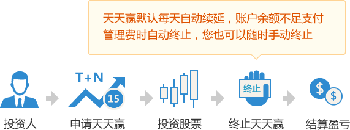

短线狙击神器，涨停就赚150%
天天赢专为短线炒股高手提供操盘资金，在股市中每天都有很多短线机会，当机会出现需要狙击时，天天赢将成为您短线炒股的神器。
您只需预付少量的风险保证金，最高可获得300万元的实盘资金。
当您投资盈利时，盈利全归您，风险保证金全额退还。如投资亏损，亏损金在风险保证金里扣除，剩余保证金退还。简单说就是盈亏自负。
操盘资金最短可使用2天，最长30天。我们按天收取账户管理费，用几天付几天，最低每天2元起。
专业风控，帮您养成良好投资习惯
天天赢操盘申请成功后，您会收到一个证券公司的股票交易账户，然后就可以开始交易了。
为了保护操盘资金的安全，同时帮您养成良好的投资习惯，交易账户会设置亏损警戒线和亏损平仓线。
亏损警戒线：当总操盘资金低于警戒线以下时，只能平仓不能建仓，需要尽快补充风险保证金，以免低于亏损平仓线被平仓。
亏损平仓线：当总操盘资金低于平仓线以下时，我们将有权把您的股票进行平仓，为避免平仓发生，请时刻关注风险保证金是否充足。
1、不得购买S、ST、*ST、S*ST、SST、以及被交易所特别处理的股票；
2、不得购买权证类可以T+0交易的证券；
3、不得购买首日上市新股（或复牌首日股票）等当日不设涨跌停板限制的股票；
4、5倍杠杠借款金额50万以上单只股票不得超过账户总资产的50%（50万或以下不受限制）；
5、5倍杠杠借款金额100万以上创业板单只股票不得超过账户总资产的33%（100万或以下不受限制）；
6、10倍杠杠借款金额20万以上单只股票不得超过账户总资产的50%（20万或以下不受限制）；
7、15倍杠杠借款金额10万以上单只股票不得超过账户总资产的50%（10万或以下不受限制）；
8、不得进行坐庄、对敲、接盘、大宗交易、内幕信息等违反股票交易法律法规及证券公司规定的交易。
操盘前必读
1、请尽量保持总操盘资金高于亏损警戒线，及时添加风险保证金，以免到达亏损平仓线被强制平仓；
2、总操盘资金到达亏损平仓线后，如不想添加风险保证金，请及时卖出股票，以免出现超额亏损；
3、请尽量保持账户余额充足，以免无法支付天天赢的账户管理费，被自动平仓并终止天天赢。
如何终止天天赢
您在申请天天赢操盘后，账户管理费会按天收取，默认每天自动延期，终止操盘有“自动终止”和“手动终止”两种：
自动终止：当账户余额不足以支付当天管理费时，当天下午我们有权卖出该天天赢的所有股票，然后扣除当天管理费并终止天天赢；
手动终止：您也可以随时到天天赢方案页面，选择“终止操盘、结算盈亏”来手动终止，手动终止前请确保已卖出该天天赢的所有股票。
股票停牌处理
如果您买的股票遇到停牌，您可以根据您的情况，选择“继续持有”或“放弃持有”：
继续持有：支付账户管理费到停牌结束（请确保账户余额足够，以便扣取管理费），如中途停止视为放弃持有；
放弃持有：我们将接收您的股票，结算价按照停牌前最后收盘价结算盈亏。
超额亏损处理
如果您买的股票出现快速下跌，您来不及或忘了卖出股票，我们也来不及平仓处理（我们有权平仓，但不保证平仓价格），出现的超额亏损由操盘人承担超额亏损金，所以请养成及时添加风险保证金、碰及亏损平仓线时卖出股票的良好投资习惯。超额亏损金必须在3天内补交，如恶意延期或拒绝支付超额亏损金，您在我们的平台上会有不良记录，它会影响您以后在我们平台上配资的金额和风险保证金比例，甚至无法再申请操盘。
交易手续费
手续费包含印花税、过户费和交易佣金，印花税和过户费按财政部和交易所规定收取，交易佣金0.08%（万8）由券商收取。
投资盈利演示（风险保证金少点）
| 申请实盘资金2000元，预付风险保证金133元 总操盘资金2133元，每天账户管理费4元 |
|
| 第1天 | 买入股票2133元 |
| 第2天 | 继续持有 |
| 第3天 | 股票涨了2%，卖出股票，终止操盘 |
|
== 结算盈亏 == 股票盈利金：2133元 × 2% = 42.66元 账户管理费：4元 × 3天 = 12元 风险保证金：133元 您可以获得：42.66元 - 12元 + 133元 = 163.66元 投资收益率：( 42.66元 - 12元 ) ÷ 133元 = 23% |
|
| 风险保证金少点，管理费略高，收益率非常高，容易被平仓 | |
投资亏损演示（风险保证金少点）
| 申请实盘资金2000元，预付风险保证金133元 总操盘资金2133元，每天账户管理费4元 |
|
| 第1天 | 买入股票2133元 |
| 第2天 | 继续持有 |
| 第3天 | 股票跌了1%，卖出股票，终止操盘 |
|
== 结算盈亏 == 股票亏损金：2133元 × 1% = 21元 账户管理费：4元 × 3天 = 12元 风险保证金：133元 您可以获得：133元 - 21元 - 12元 = 100元 投资亏损率：( 133元 - 100元 ) ÷ 133元 = 25% |
|
| 风险保证金少点，管理费略高，亏损率高，容易被平仓 | |
投资盈利演示（风险保证金多点）
| 申请实盘资金2000元，预付风险保证金400元 总操盘资金2400元，每天账户管理费2.4元 |
|
| 第1天 | 买入股票2400元 |
| 第2天 | 继续持有 |
| 第3天 | 股票涨了2%，卖出股票，终止操盘 |
|
== 结算盈亏 == 股票盈利金：2400元 × 2% = 48元 账户管理费：2.4元 × 3天 = 7.2元 风险保证金：400元 您可以获得：48元 - 7.2元 + 400元 = 440.8元 投资收益率：( 48元 - 7.2元 ) ÷ 400元 = 10.2% |
|
| 风险保证金多点，管理费低，收益率高，不容易被平仓 | |
投资亏损演示（风险保证金多点）
| 申请实盘资金2000元，预付风险保证金400元 总操盘资金2400元，每天账户管理费2.4元 |
|
| 第1天 | 买入股票2400元 |
| 第2天 | 继续持有 |
| 第3天 | 股票跌了1%，卖出股票，终止操盘 |
|
== 结算盈亏 == 股票亏损金：2400元 × 1% = 24元 账户管理费：2元 × 3天 = 7.2元 风险保证金：400元 您可以获得：400元 - 24元 - 7.2元 = 368.8元 投资亏损率：( 400元 - 368.8元 ) ÷ 400元 = 7.8% |
|
| 风险保证金多点，管理费低，亏损率低，不容易被平仓 | |